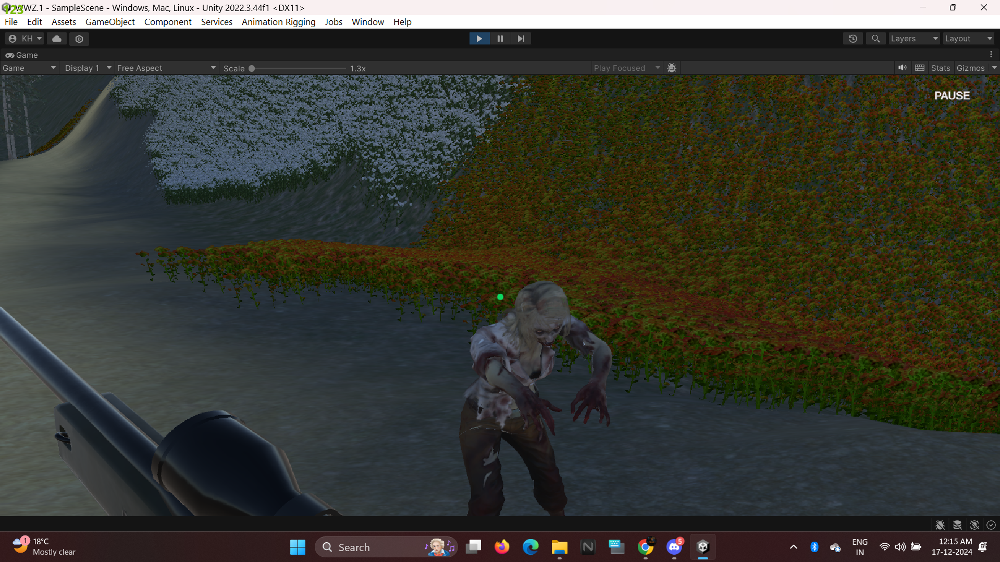
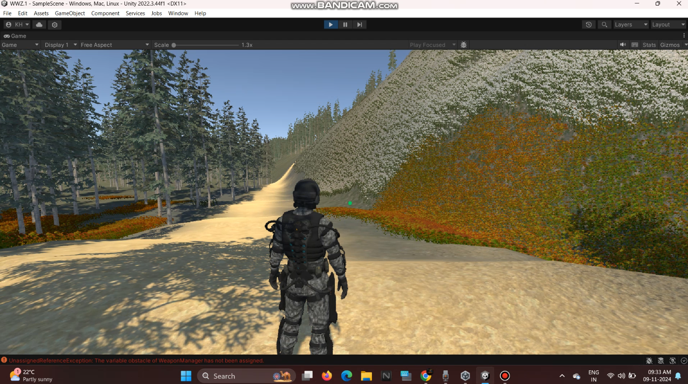

This FPS game delivers a dynamic, action-packed experience with realistic environments and engaging gameplay. Built using Unity, it leverages advanced tools for polished mechanics and immersive design.
Key Features
1.Tools and Technologies Used
Unity Engine: Core framework for development and real-time rendering.
C#: Scripts for player controls, AI, shooting mechanics, and UI interactions.
Cinemachine: Smooth camera transitions and dynamic cutscenes.
NavMesh: AI pathfinding for enemy movement and tactical behaviors.
Terrain Tools: For creating detailed maps with realistic landscapes.
Animator and Animation Rigging: Smooth character and weapon animations, using IK for realism.
2. Gameplay Mechanics
Shooting System: Raycasting for accurate bullet detection, recoil, and effects.
Enemy AI: Dynamic behaviors with patrol, chase, and attack modes, powered by NavMesh.
Health & Damage: Player and enemy health systems with visual feedback (e.g., screen shakes).

3. Level Design
Realistic Environments: Created with Unity’s Terrain System, featuring vegetation, pathways, and interactive elements.
Objectives: Clear enemies, explore, or reach checkpoints.
Lighting & Post-Processing: Dynamic lighting, color grading, and atmospheric effects.
4. Advanced Features
Cinematic Moments: Camera control with Cinemachine for cutscenes and immersive transitions.
UI and Sound: Custom HUD for health and ammo, directional audio for footsteps and gunfire.
Optimization: Object pooling, LOD for 3D assets, and baked lighting for performance.
Conclusion
This FPS project demonstrates a solid grasp of Unity’s tools and systems, combining advanced gameplay mechanics with visually engaging environments. The game reflects your growth as a developer and delivers a seamless, polished experience.